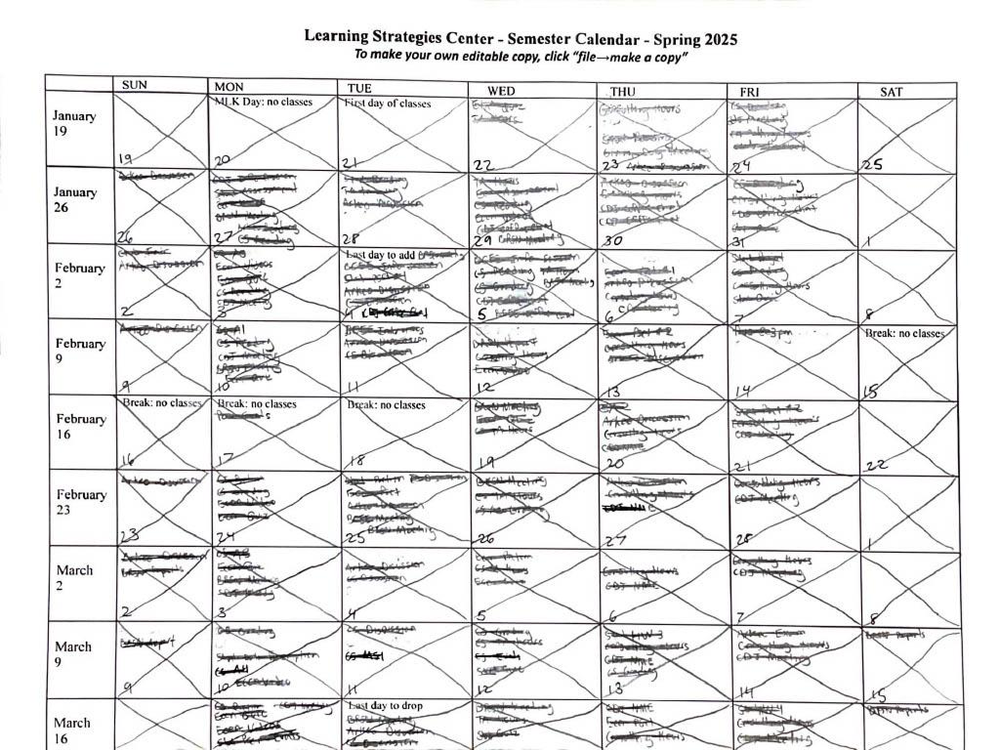

About
More
Hi. I'm Nikhil Chinchalkar. This is a model of my desk.
Click on the icons to learn
more
about my work.
Projects
Personal
Everything Else

'Making Animated Visualizations in R' Textbook
'Campaign Trails' Interactive Essay
'Architecture 1970' Tour
'Fifth Down' Scrapbook
'3D Movies with GIS Data in Blender' Textbook
My resume
A previous version of my personal website
My calendar that I've used through college

My personal logo

A fortune that has been on my desk since middle school:
'There is no education like adversity'
The initial sketch for the design of this website
A Sports Illustrated magazine of
the Eagles 2024 Super Bowl
season